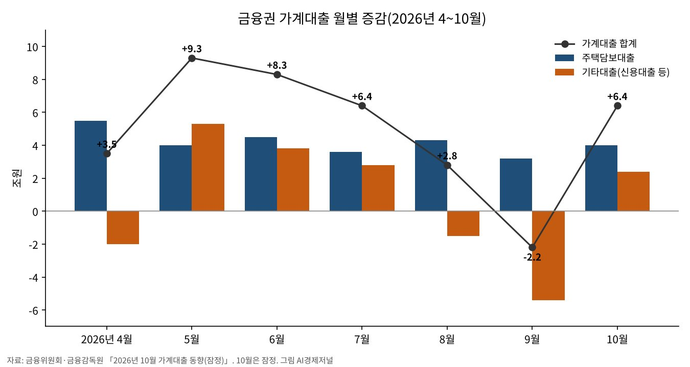

가계대출 한 달 새 6조4000억원 증가, 신용대출 다시 늘어
주택담보대출 4조원, 집단대출 2조4000억원
신용대출 1조2000억원, 한은 “주식 순매수 영향”
9월 가계대출 금리 연 4.96%
AI경제저널=김갑봉 기자 | 금융감독원과 금융위원회는 10월 금융권 가계대출이 6조4000억원 늘었다고 지난 11일 밝혔다. 9월에 2조2000억원 줄었다가 한 달 만에 다시 늘었다.
1년 전 10월의 4조9000억원보다 많다. 올해 1~10월 누적 증가액은 42조4000억원으로 지난해 1년 동안의 38조원을 이미 넘었다.
한 달 만에 다시 늘어난 빚
주택담보대출이 4조원 늘어 9월 3조2000억원보다 증가폭이 커졌다. 기타대출은 9월 5조4000억원 감소에서 10월 2조4000억원 증가로 돌아섰다.
업권별로는 은행이 5조원, 제2금융권이 1조4000억원 늘었다. 제2금융권은 상호금융 2000억원, 보험 3000억원, 저축은행 2000억원, 여신전문금융회사 8000억원으로 모두 증가로 바뀌었다.

아파트 입주와 집단대출
금융당국은 이미 승인된 집단대출의 실행이 늘면서 주택담보대출 증가세가 이어졌다고 평가했다. 10월 집단대출 증가액은 2조4000억원으로 4월 2조6000억원 뒤 가장 많다.
한국은행은 같은 날 금융시장 동향에서 중도금·이주비 같은 집단대출 취급이 늘었다고 설명했다. 은행 전세자금대출은 8월 7000억원, 9월 9000억원, 10월 8000억원 줄었다.
집을 사고파는 거래는 줄었다. 국토교통부 집계를 인용한 금융당국 자료를 보면 수도권 아파트 매매거래량은 3월 2만7000호에서 9월 1만8000호로 감소했다.
주가가 떨어질 때 늘어난 신용대출
신용대출은 9월 2조9000억원 줄었다가 10월 1조2000억원 늘었다. 금융당국은 신용대출의 변동성이 커졌다고 밝혔다.
한국은행은 은행 기타대출이 증가로 돌아선 까닭으로 9월 계절요인의 기저효과와 개인의 주식 순매수를 들었다. 9월 감소에는 분기말 부실채권 정리와 명절 상여금 유입이 작용했다고 덧붙였다.
같은 기간 코스피는 9월 말 6838에서 10월 말 5731로 내렸다. 11월 10일에는 5239로 9월 말보다 23.4% 낮다.
빌린 돈의 값
한국은행 집계로 9월 예금은행의 신규 가계대출 금리는 연 4.96%다. 8월보다 0.20%p, 지난해 12월보다 0.61%p 높다. 주택담보대출은 4.88%, 일반신용대출은 6.49%다.
상호저축은행의 9월 신규 일반대출 금리는 연 9.80%다. 한국은행은 10월 금융시장 동향에서 단기 시장금리가 기준금리 추가 인상 기대 등으로 올랐다고 밝혔다.
김미루 한국개발연구원 연구부장은 2023년 보고서에서 기준금리가 1%p 오르면 20대의 연간 소비가 약 29만9000원 줄어 60대의 8.4배라고 분석했다.
같은 보고서에서 부채 상위 50% 청년 가운데 신용점수 700점 이하인 층은 연간 소비가 53만9000원 줄었다. 청년 부채의 85% 안팎은 주거 관련 부채라고 김 부장은 밝혔다.
총량 관리와 실수요자
금융당국은 금융권 가계대출이 총량목표 범위 안에서 관리되고 있다고 밝혔다. 신진창 금융위 사무처장은 지난달 15일 총량관리 목표를 연간 증가율 1.5%에서 3.0% 수준으로 올렸다고 말했다.
금융당국은 특정 시기 대출 쏠림으로 일률적인 대출 절벽이 생기지 않게 해 달라고 금융권에 당부했다. 청년 같은 서민·실수요자와 지방의 자금 공급은 지나치게 줄지 않도록 배려하겠다고 했다.
사업자대출 용도 외 유용 같은 부동산 관련 불법행위는 계속 막겠다고 밝혔다. 2021년 뒤 취급한 고위험 사업자대출의 전 금융권 전수점검은 12월까지 이어진다. 적발되면 대출을 회수하고 신규 대출을 1차 3년, 2차 10년 막는다.
참고문헌
- 김미루, 「금리인상에 따른 청년층의 부채상환 부담 증가와 시사점」, KDI 현안분석(경제전망 2023 상반기), 한국개발연구원, 2023.4.26, https://www.kdi.re.kr/research/analysisView?art_no=3468
- 금융위원회·금융감독원·한국은행, 「2026년 10월 가계대출 동향(잠정)」 보도자료, 2026.11.11 배포(11.12 조간), https://www.fss.or.kr/fss/bbs/B0000188/view.do?nttId=249804&menuNo=200218
- 한국은행 금융시장국, 「2026년 10월 금융시장 동향」, 2026.11.11, https://www.bok.or.kr/portal/bbs/B0000502/view.do?nttId=11066468&menuNo=201263
- 한국은행 금융통계팀, 「2026년 9월 금융기관 가중평균금리」, 2026.10.29, https://www.bok.or.kr/portal/bbs/B0000501/view.do?nttId=11066053&menuNo=201264
- 금융위원회 금융정책과, 「2026년 9월 가계대출 동향(잠정) 및 「가계부채 점검회의」 개최」, 2026.10.15, https://www.fsc.go.kr/no010101/87939
[사진 출처]
- [사진1] 인천광역시 청년정책담당관 보도자료 「좋은 일자리에서 안정된 삶까지…인천, 청년이 머무는 도시로」(2026.11.10) 첨부 사진, 공공누리 제1유형(출처표시) https://www.incheon.go.kr/IC010205/view?repSeq=DOM_0000000015937664 / [도표1] 금융위원회·금융감독원·한국은행 「2026년 10월 가계대출 동향(잠정)」 표로 AI경제저널 작성